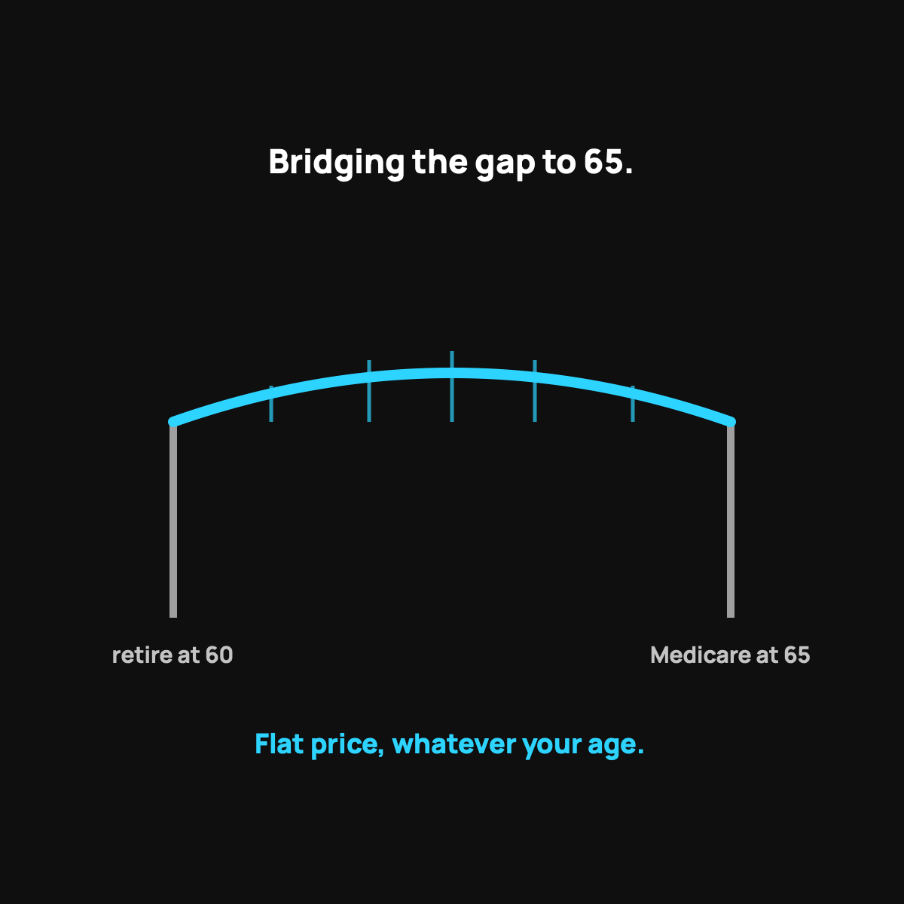

Health Sharing for Early Retirees
Flat pricing that doesn't punish your age, built to bridge the pre-Medicare gap.
Between leaving work and Medicare at 65, individual insurance in your late 50s and early 60s can cost well over a thousand dollars a month per person. Health sharing's flat $60 per person base fee doesn't rise with age, and a lower-cost backstop for a known stretch of years is exactly the job. Mind the pre-existing rules and the lack of a legal guarantee.

There's a special kind of trap that catches people who did everything right. You save hard, you retire early, maybe at 58 or 60, and then you run into the wall nobody warned you about: you're too young for Medicare, which doesn't start until 65, and buying your own health insurance in that gap can cost more than your mortgage. That stretch is where a lot of early-retirement dreams get scared back into the workforce. Health sharing is one of the best-kept answers to it.
The pre-Medicare gap problem
Between the day you leave work and the day Medicare kicks in at 65, you're on your own for healthcare. And here's the cruel part: individual insurance in your late 50s and early 60s is priced high, because you're older, and often runs well over a thousand dollars a month per person, with a fat deductible behind it.
For a couple, that can be a soul-crushing number, big enough to make you wonder if you can actually afford to stay retired. That's the bridge you have to cross, and it's usually five or six years long.
Why health sharing fits this bridge so well
A few reasons it's a natural fit for the pre-Medicare years:
- The cost doesn't spike with age the way premiums do. With CrowdHealth, the service I use, it's a flat $60 per person per month plus a modest crowd contribution. A 60-year-old and a 30-year-old pay the same base fee. For an older adult, that flat pricing is a huge deal.
- It's built for exactly this situation. You're bridging a known number of years until a guaranteed program starts. A lower-cost backstop for that stretch is precisely the job.
- You likely have savings to self-insure the small stuff. Early retirees usually have an emergency fund, which means the $500 per event and cash prices are very manageable.
The honest cautions for this group
I have to be extra straight with this audience, because health matters more as you age.
First, pre-existing conditions. By your late 50s, many people have something, and health sharing has real waiting-period rules for that. Read them carefully for your situation, which I explained in pre-existing conditions and health sharing.
Second, it is not insurance and has no legal guarantee. If you have an active condition needing ongoing care, weigh that hard. My honest who-should-skip-this list applies double in that situation.
The takeaway
If you're staring at the pre-Medicare gap and gasping at insurance quotes, health sharing deserves a serious look. Flat pricing that doesn't punish you for your age, a model built to bridge a known stretch of years, and savings you can use to handle the small stuff. Mind the pre-existing rules and the lack of a legal guarantee, and it can be the difference between staying retired and going back to work just for the benefits.
Questions I get about this
Does health sharing cost more as you get older?
With CrowdHealth the $60 per person advocacy fee is the same at 60 as at 30. The monthly crowd contribution varies by age and household, but there's no age-priced premium the way individual insurance works. For an older adult, that flat base pricing is a huge deal.
What should early retirees be careful about with health sharing?
Pre-existing conditions. By your late 50s many people have something, and health sharing has real waiting-period rules. Read them carefully for your situation, which I explain in Pre-Existing Conditions and Health Sharing. And remember it isn't insurance and has no legal guarantee.
What happens when I reach 65?
Medicare starts, and the bridge is over. Health sharing is a month-to-month membership with no long contract, so you can move to Medicare when it kicks in.
Want to see your number for the bridge years? Use my code NORMAL: check CrowdHealth (opens in a new tab). New members get their first 3 months at $99 a month with code NORMAL.
My family of four uses CrowdHealth and I really believe in the model. If you join through my discount link (opens in a new tab) (code NORMAL), you get your first 3 months at $99 a month, and Normaltown USA earns a referral bonus if you stick around. It costs you nothing extra, and I only refer you to things I would tell a friend about. Health sharing is not insurance, and nothing here is medical, tax, or financial advice.

Written by David Dewese
Normal guy with a full-time job, wife, and kids. Spent twenty years pursuing music and creative ventures before starting a family. Sharing tips and tricks on how to thrive while living on an artist's income. Not a financial advisor. More about me.
New here?
Normaltown USA is plain-English money and healthcare help for normal people, written by a regular guy with a family of four. No jargon, no hype. Start here, or read the FAQ.